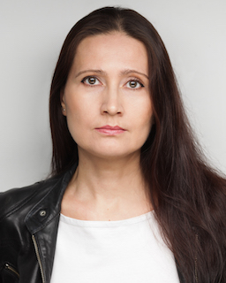

|  | Liliya WardRussian and English tutor in London I am a London-based private teacher of Russian and English. I teach individual students and groups; I teach in person and online via Skype, Zoom and Teams I collaborate with various language schools. You can view my full CV here I studied Russian and English Philology at Kazan University (Russia) and obtained my doctoral degree in Russian Linguistics in 2000. I also have an MSc in Cognitive Neuroscience from the University College London. After graduating I started working as a lecturer at Kazan university teaching at the Department of the Romance and Germanic Languages. I have been working as a private Russian tutor for 14 years. I have been a language teacher for 25 years. Connect with me on LinkedIn here |
I teach Russian
|
I teach English
|